In this project, we added additional features to our ray tracer such as rendering mirror and glass materials and microfacet material. We primarily focused on implementing various types of materials as features. We didn’t encounter too many problems other than missing small details in the equations which was easy to check for.
In this part, our goal was to implement mirror and glass models. We first created a reflection function which just simply transforms the x, y, and z coordinates of wo to -x, -y, and z. The output is then returned as wi.
For mirror materials, we simply use our reflect function. We first set the pdf to 1 in sample_f() and return reflectance/abs_cos_theta(*wi) which is used for delta BSDFs. The reason why we return reflectance/abs_cos_theta(*wi) is because we are simply just trying to change the direction of the ray rather than the intensity or anything else to maintain a perfect mirror.
Next, we implemented refraction which allows us to actually see the glass objects instead of just having black boxes/spheres. We first set our wo coordinates according to the spherical coordinate Snell’s equations. For the z coordinate, we specifically keep track of its sign using a variable named pos because z is negative when wo starts inside of an object with the index of refraction being greater than 0. Using Snell’s law, we determine that if 1-n^2(1-cos^2(theta)) < 0, we have total internal reflection; otherwise, we returned false. It was also important for us to keep track of whether or not we are entering or exiting because n = 1/ior when entering and n=ior when exiting. Once we have these values, we set the spherical coordinates which combine to be wi. If there is refraction, we return transmittance/abs_cos_theta(*wi)/eta^2.
In the last task, we utilize reflection and refraction to simulate glass material. We sample the glass BSDF using Schlick’s Approximation. This gives us a coin flip probability of whether or not we want to use reflection or refraction. If there’s total internal reflection, we assign the reflection of wo to *wi, the *pdf to 1, and return reflectance/abs_cos_theta(*wi). Otherwise, we will compute Shlick’s reflection coefficient and check to see if there is a coin flip probability. If coin_flip(R), then we assign the reflection of wo to *wi, set the *pdf to R, and return R * reflectance / abs_cos_theta(*wi). Otherwise, we assign the refraction of wo to *wi, set *pdf to 1-R, and return (1-R) * transmittance / abs_cos_theta(*wi) / eta^2.
128 samples per pixel, 4 samples per light
|
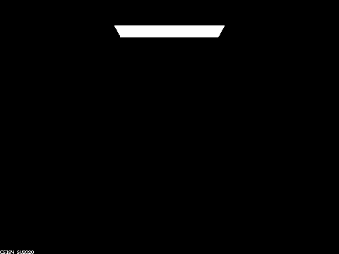
|
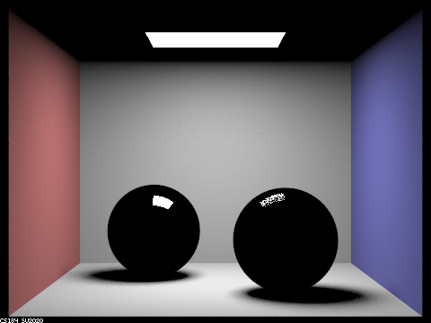
|
|
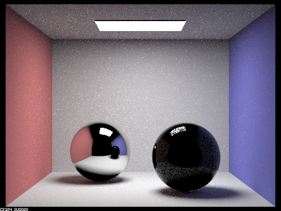
|
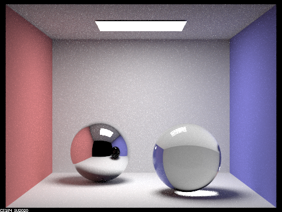
|
|
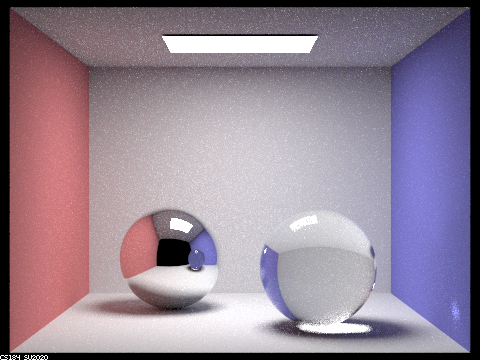
|
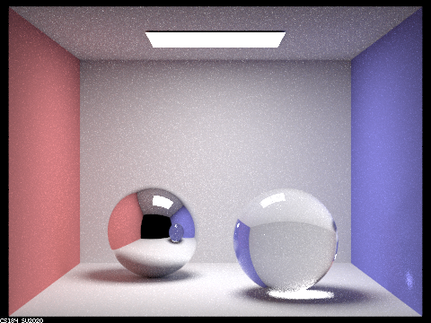
|
|
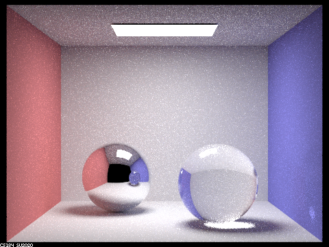
|
At max_ray_depth = 0, we do not see any light other than the light source because there is no bouncing of light allowed.
At max_ray_depth = 1, there is some light in the environment but the spheres are black. There is light being reflected off the light sphere, while there is some light being reflected off of and refracted into the right sphere.
At max_ray_depth = 2, the left sphere appears to be more like a mirror and it is able to capture the image of the right sphere. There is also some reflected light in the right sphere but it is mostly black.
At max_ray_depth = 3, we can start to see the ceiling being reflected in the left sphere and the right image appears to be more glass-like. However, the shadow from the right sphere is pretty dark.
At max_ray_depth = 4, the left sphere is also reflecting the color of the wall which is reflected from the right sphere. The right wall also has glare from the right sphere. The right sphere seems to have lighter shadows.
At max_ray_depth = 5, there are a few more details. For example, the left sphere has a more clear reflection of the light.
At max_ray_depth = 100, the shadows are lighter and also a bit smoother. The reflection of the left sphere on the right sphere is also more detailed as well as the glare on the wall.
In this part, our focus was to implement a microfacet model.
We first implement the BRDF evaluation function. We set f = F(wi) * G(wo, wi) * D(h) / (4 * dot(n, wo) * dot(n, wi)). Where F is Fresnel term, G is shadowing-masking term, D is normal distribution function. n is macro surface normal. h is the half vector calculated by normalizing wo + wi.
We then implement the normal distribution function, which is based off the Beckmann distribution. In particular, D(h) = e^(-tan^2(theta_h)/alpha^2) / (pi * alpha^2 * cos^4(theta_h)).
Then we implement the Fresnel term. We mainly just compute the different variables in the equations provided, using eta and k which together represent indices of refraction for conductors, along with wi which determines cos(thetai).
The most important part was implementing importance sampling which is able to sample with a higher probability of being correct. In order to have less noise and time spent converging, we sample pdfs that follow a normal distribution. Next, we get a pdf that follows the Beckmann NDF using the inversion method and inverse it. For solid angles, we use a slightly different method to calculate the pdf. We sample a r1 and r2 value from uniform [0,1) distribution, and use r1 and r2 and alpha to calculate theta and phi values and combine both. You then calculate p_theta(theta_h) and p_phi(phi_h) using theta and phi, and then use those values to calculate pw(h) which is then used to calculate the final pdf.
This is using 128 samples per pixel, 1 samples per light, number of bounces = 5
|
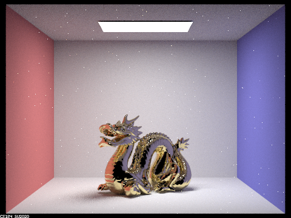
|
|
|
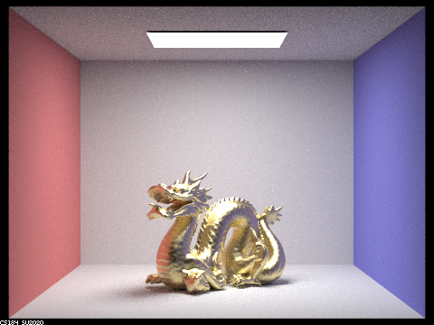
|
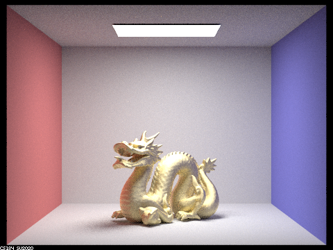
|
Differences between different images: As alpha-value increases, the dragon becomes more matte. On the other hand, as the alpha-value decreases, the dragon becomes more shiny/reflective, and more white dots appear, spread about in the image, for some reason.
This is using 64 samples per pixel, 1 samples per light, number of bounces = 5.
|
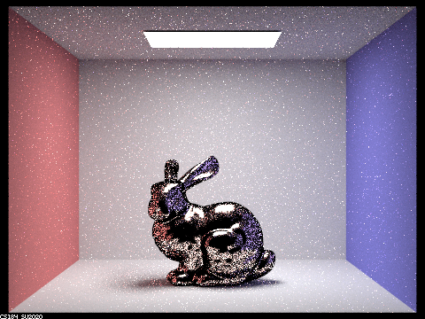
|
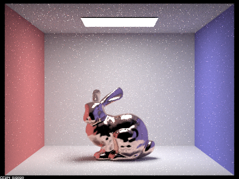
|
Differences: the cosine hemisphere sampling image has a dark border around the bunny and is littered with various black dots, and just more noise in general. On the other hand, the importance sampling image has a much smoother and cleaner look, not littered with black dots.
Link for tin eta and k values: https://refractiveindex.info/?shelf=main&book=Sn&page=Golovashkin-293K
Parameter values = eta: 2.1600, k: 6.3500
|
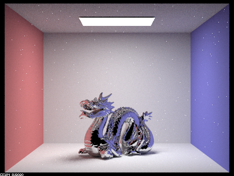
|
As partners, we collaborated really well! We both like to code together instead of splitting up parts so we’ll usually spend time reading the spec first and then proceed with coding. This allows both of us cover all the material in a project rather than just get parts of it. It also makes debugging much easier because there are two people going through it rather than just one. We also have learned a lot more because if one person doesn’t know something, there’s a good chance the other person does and vice versa.